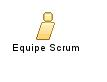

| Role: Equipe Scrum |
 |
|
Relationships
 |
Main Description
A Equipe Scrum:
Membros do Time Scrum não têm um papel fixo (Ex: programador, designer, testador ou arquiteto). Todos no projeto trabalham juntos para finalizar a lista de atividades que eles coletivamente se comprometeram a realizar durante um Sprint. |
Staffing
| Assignment Approaches | Membros devem se dedicar em tempo integral, mas pode haver exceções (ex: administrador de banco de dados). Deve-se alterar membros somente no intervalo entre Sprints. |
|---|